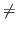

Subsections
Evidence based accountability in education / in medicine を支える基盤分野
テストの作成・実施・報告において合理的な判断をするのに役立つものだが，我が国では顧みられることが少ない。
- 人口減少（質保証）
- 財政難（経営学的信念）
- 職業スキルの抽象化（知的能力を要する職業に就く人が世界的に増加している1）
学校教育法の改定（平成28年5月20日）（第4章，第30条，2項）
「学力の三要素」
「学力観のコペルニクス的変換」
???
「何が起こるかわからない時代だから，正答が一つに定まらない問題」
???
明治から受け継がれてきた文脈依存の学力観を修正すればよいだけの話で，すべて否定しさる必要はないのでは。
- 中心極限定理：個人の得点を左右するのならともかく，学校平均を動かすのは簡単ではなくなる（学校平均の分布の穴からはい出せるか考えてみよ）
- 選抜効果
- 生態学的誤謬
- 構成概念レベルでの学力分布の形が同じでも，テスト得点の分布は構成される項目によって変わる。
- テスト理論は，プロセスモデル（何を考えてその解答に至ったのか）ではない。（選択式はダメだとかそういう話はテスト理論から導かれることはない。）
- 豊かな多様性
- 高い信頼性
- 現実的なコスト
3つすべてを満足することはできない。
どれか2つを重視すると，残りの1つは軽視せざるを得ない。
保育，幼稚園要領にも「非認知的能力」が盛り込まれた。
非認知
「自己と社会性の力」（遠藤命名）
- 「社会的知能」Dewy, Thorndike
- 人の心理社会的適応はIQのみで説明され得ない（Binet）
- Gardner, Sternberg...
乳幼児期のアタッチメントの剥奪
 自己と社会性発達に長期的ダメージ
自己と社会性発達に長期的ダメージ
James Heckman：恵まれない子どもたちに対する乳幼児期への投資は，「認知」以上に「非認知」能力を促すことを通して生涯発達に影響（経済状態，幸福）
（IQの上昇は短期的，就学時にはプログラム非参加児と変わらず）
家庭外の安定した大人との関係
非認知=自己と社会性の発達を補償
- 実際は，「非認知」のどのような要素を獲得したことで，成年時の経済状態や幸福に結びついたことを積極的に立証するものではない。
- 追いつき効果（恵まれない子どもたちに対する補償）
上乗せ効果
- 一般サンプルには及ばない
感情知能が重要
遺伝的に定まるIQが最も重要
Walter Mischel：1970年からの追跡研究
- 非認知
認知（逆の因果ではないらしい）
- 幼少期に非認知を身につけることの重要性（社会情緒的スキル：生産性への寄与が期待され，成長可能性が見込まれ，測定可能なもの）
- 「スキルがスキルを生む」Skills beget Skills
参考：非認知的（社会情緒的）能力の発達と科学的検討手法についての研究に関する報告書（遠藤チーム）
- 非認知的能力は，more is better / less is worse の問題ではない。
- personalized socialization
変化を企図するのはskillか，competenceか，traitか？
パーソナリティの変化可能性は年齢が上がると少なくなる。
mediator model ではなく，moderator model
- 制御・抑制に関わる諸変数の予測力が相対的に大きい
- 制御・抑制については介入による効果もある程度見込める（muscle model）
- レジリエンス・コーピング等も一部関連，向社会性も（主にクラス適応等を媒介して）関連
- 自己概念，自尊心，自己肯定感との関連は微妙（因果的影響はほぼない）（根拠を伴わない自尊心には負の効果さえある）
社会的ワクチンとしての自尊心
※ 努力の結果が学業成績に結びついたという感覚によって高められた自尊感情は有効らしい
- ほめられ中毒の弊害（表面的な自尊心と強い自己保身傾向，潜在的な自己能力への疑い）
- IATでは決して低くはない
- ただし，同じ尺度を用いた場合は低下傾向が見られる
Taichi Okumura
2017-12-08